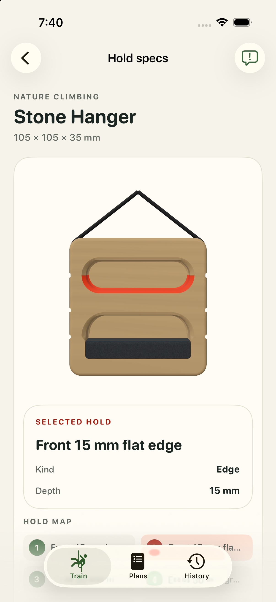
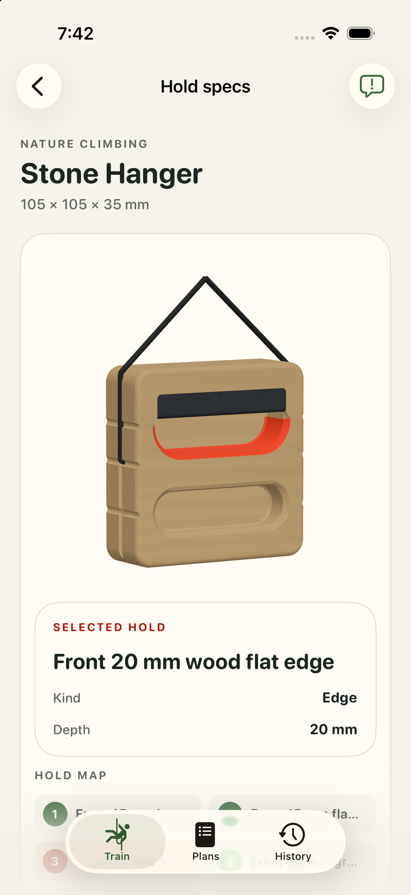
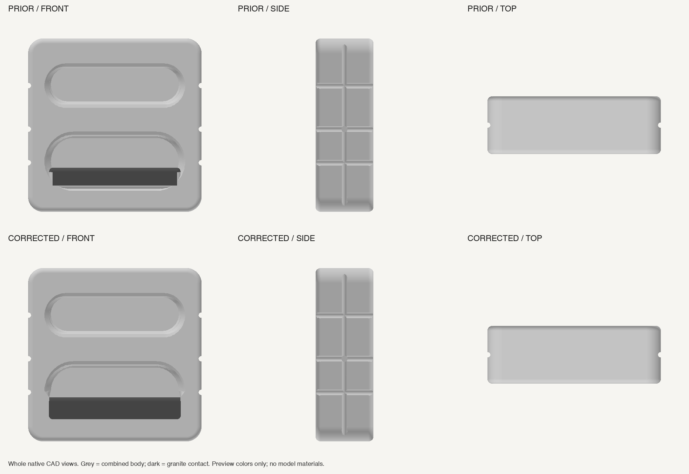
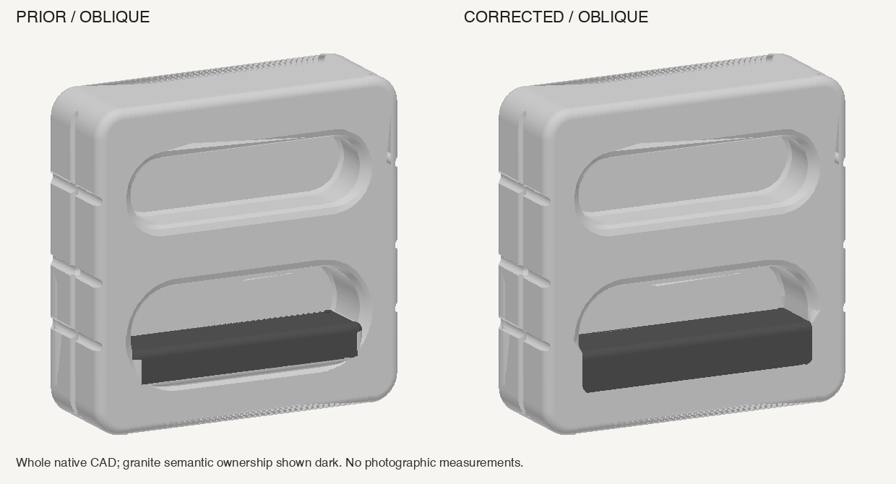
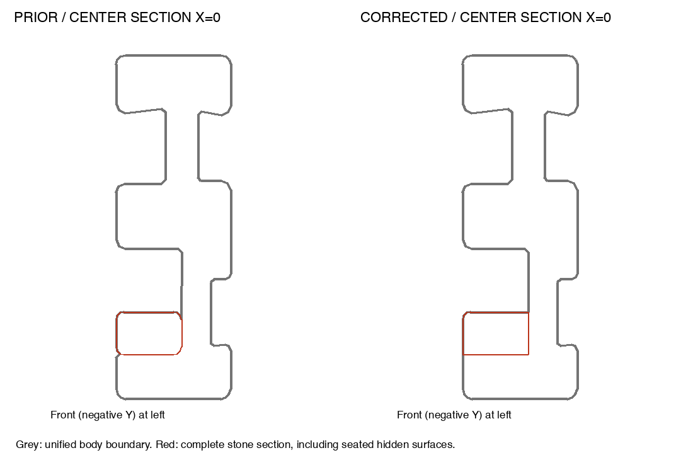
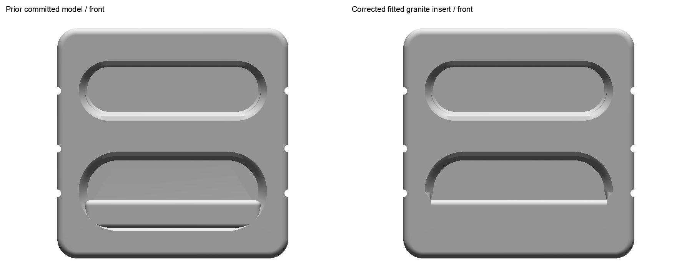
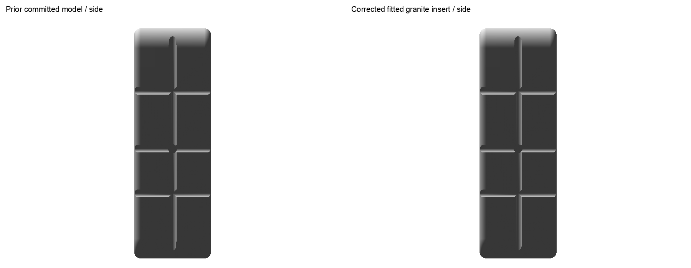
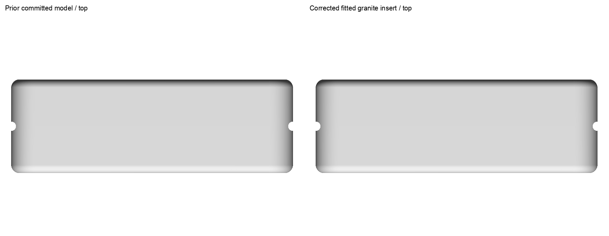
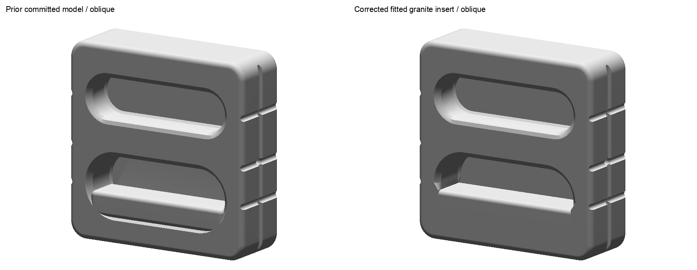
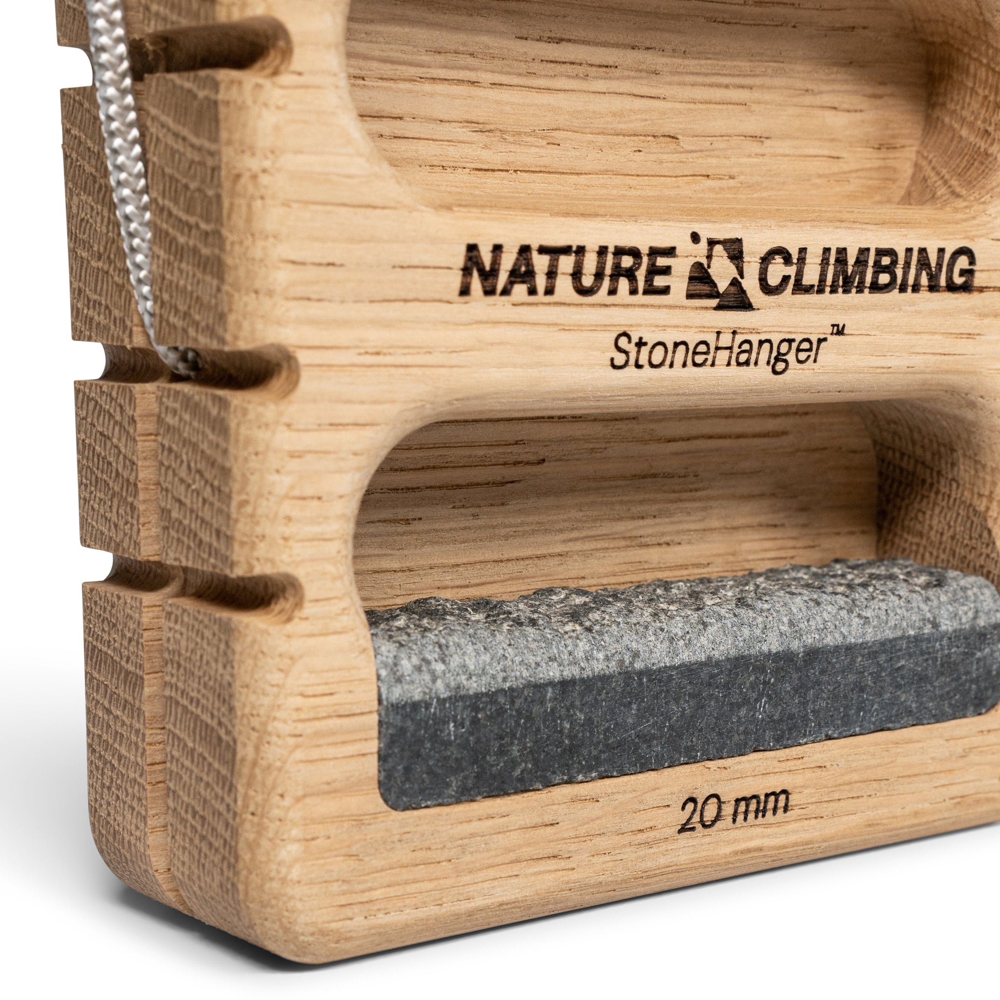

Stone Hanger #9 — fitted granite insert
The granite fits into a wood recess with straight sides and a clean bottom seam, as shown in the manufacturer close-up. Asher accepted the shown geometry, finishes, cords and hold positions; the display estimates and recorded approval limits still apply.
Correction and limits · Manufacturer evidence · App validation fixture
Fresh app views

Upright board, granite restored; 15 mm wooden edge selected. 
Inverted board, granite restored after switching to the 20 mm wooden edge. Exact prior and corrected native geometry

Prior committed geometry above, corrected geometry below; front, side and top. 
Prior and corrected native oblique views. 
Prior and corrected center sections; hidden seated stone surfaces shown in red. Exact exported prior and corrected models

Exact prior committed model at left and corrected model at right: front. 
Exact prior committed model at left and corrected model at right: side. 
Exact prior committed model at left and corrected model at right: top. 
Exact prior committed model at left and corrected model at right: oblique. Retained manufacturer close-up

Whole approved manufacturer close-up; visual evidence only. All 25 whole app frames